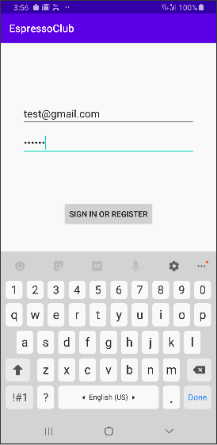
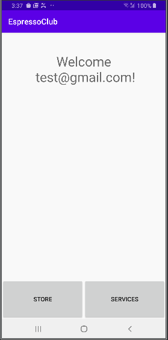

In this codelab you will learn how to write automation tests with Espresso: Android automated testing framework.
What You'll Learn
How to setup Espresso
How to record Espresso Test, Save it & Run
How to write Espreso Tests
Prerequisites
Android Studio
Android Device
Source Control Tool: GitExtensions/Sourcetree
In this codelab you will modify the EspressoClub project. You will setup Espresso and test app's functionality.
The EspressoClub app requires user's login, user has to enter valid credentials in the login screen (LoginActivity): valid email and valid password (>5 characters). After user has logged in, the main screen will be launched (MainActivity).
See figures below.


To get the sample app:
Clone the repository from GitHub and switch to the starter branch.
$ git clone https://github.com/oaviad/codelab.git
Add Espresso dependencies
In your app's top-level build.gradle file, you need to specify these libraries as dependencies:
To start recording a test with Espresso Test Recorder:
Click Run > Record Espresso Test.
In the Select Deployment Target window, choose the device on which you want to record the test. Click OK.
Espresso Test Recorder triggers a build of your project, and the app must install and launch before Espresso Test Recorder allows you to interact with it. The Record Your Test window appears after the app launches. Interact with your device to start logging events such as "tap" and "type" actions.
To save a recording: fill in Test class name, Test class language & click OK.
Task instructions:
Start recording
Enter valid user credentials
Click Sign In button
Add one Assertion
Save your recording to Kotlin class
Verify tests generated, runs successfuly
The main components of Espresso are:
Espresso: Entry point to interactions with views (via onView() and onData()). Also exposes APIs that are not necessarily tied to any view, such as pressBack().
ViewMatchers: allows you to find a view in the current view hierarchy.
ViewActions: allows you to perform actions on the views.
ViewAssertions: allows you to assert the view state.
The following shows how all three expressions work together:
Use a ViewMatcher to find a View: onView(withId(R.id.my_view))
Use a ViewAction to perform an action: .perform(click())
Use a ViewAssertion to check if the result of the action matches an assertion: .check(matches(isDisplayed()))
Task instructions:
Create a new Test class
Add the @RunWith(AndroidJUnit4::class) annotation at the beginning of your test class definition
Add ActivityScenarioRule to launch the LoginActivity before the test starts and close it after the test:
Example:
@get:Rule
val rule = activityScenarioRule<MyActivity>()
Write a test that validates, when the user enters valid credentials, login button is enabled and welcome string contains the user name entered
Example:
// onView statement
onView(withId(R.id.my_view))
.perform(click())
.check(matches(isDisplayed()))
.check(matches(isEnabled()))
.check(matches(not(isEnabled())))
// How to type text
onView(withId(R.id.my_editTextView)).perform(typeText(text), ViewActions.closeSoftKeyboard())
// How to check view text contains another string
onView(withId(R.id.my_textView)).check(matches(withText(containsString(str))))
Task instructions:
Write a test that validates, when the user enters invalid credentials, login button is disabled and error popup is displayed with the correct error message
Example:
// validate editText popup error text
rule.scenario.onActivity {
Truth.assertThat(it.my_editText.error).isEqualTo(getString(R.string.my_str))
}
Task instructions:
Create a new Test class
Add the @RunWith(AndroidJUnit4::class) annotation at the beginning of your test class definition
Add IntentsTestRule to initialize Espresso-Intents before each test and release Espresso-Intents after each test run
Example:
@get:Rule
val rule = IntentsTestRule(MyActivity::class.java)
Write a test that validates, when the user enters valid credentials and clicks the login button, a new Intent was sent with the MainActivity component and with an extra named "displayName" containing the user name entered